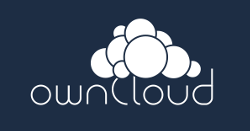

Cela fait déjà quasiment un an que je m'auto-héberge et c'est à cette occasion que j'aimerai partager l'expérience que j'ai acquis au cours de cette progressive migration.
Un bref rappel du contexte de l'époque : j'avais une adresse mail en @gmail.com, utilisais Dropbox pour synchroniser mes fichiers, conservais tout mes contacts de mon téléphone Android sur mon compte Google, me servais de Google docs pour rédiger des documents collaboratifs, ... Bref, beaucoup de Google ou de privateur quoi ! Le problème avec ces services, vous le savez tous, c'est qu'ils se font de l'argent avec leurs clients ( vous me direz "Mais on est des utilisateurs, pas des clients !". Que vous êtes naïfs !). Comment ? Google par exemple (quel bel exemple !), lit chaque e-mail que vous envoyez ou recevez, et en récupère les mots clés. Grâce à ces mots clés, il vous cible de publicités ayant un rapport avec ces mots. Si vous dites à votre patron par e-mail que vous aimez le fromage à raclette, Google vous proposera de la pub pour du fromage à raclette. Petite anecdote : je me rappelle d'une fois où un ami à moi cherchait de la sauce piquante sur le moteur de recherche Google (via son ordiphone) et il tombe sur la page d'un magasin qui en vendait. Le temps passe et dans l'après-midi, il consulte son compte Facebook (via un ordinateur en libre service) et aperçoit que sur la droite, à l'emplacement des publicités, la sauce pimentée qu'il avait cherchée la matin même était affichée avec le magasin même sur lequel il était tombé. Ici un bel exemple concret de ce que cela représente.
Je sais par expérience qu'il n'est pas facile de se passer de ce genre de services, parce que "ça marche". C'est vrai, on va pas se le cacher, Google est fonctionnel. Je vais sur Gmail, et pouf, ma boîte est là, j'ai pas besoin d'attendre. Tout est centralisé, et j'ai besoin d'un seul compte pour tous les services qu'offre Google. En contrepartie, j'offre ma vie privée à cette entreprise. A quoi bon, je n'ai rien à cacher au final !
C'est en étant sensibilisé à tous ces problèmes de vie privée et de monétisation de ma vie sur Internet que j'ai décidé d'agir. J'ai donc en premier lieu changé d'adresse e-mail pour délaisser celle en @gmail.com. J'ai trouvé un super fournisseur de mail. Le type qui gère ça est français, ne se fait pas d'argent du tout sur les services qu'il offre, et propose même un service de cloud. Pour faire tourner tous ces services, il fait chaque année une campagne d'appel aux dons. J'ai par la suite envoyé un mail à tous mes contacts gmail pour les prévenir que je n'utiliserai plus celle-ci dorénavant et qu'ils pouvaient me joindre sur la nouvelle, tout en leur expliquant mon choix. Vu que ce fournisseur proposait aussi le cloud, je n'avais plus aucune raison d'utiliser Dropbox, alors j'ai arrêter de vraiment l'utiliser. Je l'ai d'ailleurs complètement supprimé quand j'ai appris que des comptes avaient fuité récemment.

Ce qui est bien avec ownCloud, c'est qu'il grandit tous les jours et corrige des failles de sécurité sans cesse. Ce logiciel est prometteur et est une alternative libre de taille au logiciel privateur Dropbox. Chacun peut l'installer chez soit ou utiliser un serveur sur Internet. Plus besoin de tout mettre au centre sur un seul serveur. C'est ainsi plus difficile pour des pirates par exemple, de récupérer l'ensemble des comptes des utilisateurs d'ownCloud, parce qu'il faudrait attaquer tout les serveurs ownCloud du monde. Alors que pour Dropbox, y'en a qu'un seul ! De plus, Owncloud propose un service de WebDAV, cela permet de synchroniser vos contacts, vos calendrier, vos photos, ... Comme ça, plus besoin d'utiliser la synchronisation de contact Android de Google, il suffit de configurer son téléphone pour utiliser celui du serveur ownCloud !
Ceci n'est qu'une première étape, et pour le moment vous voyez que n'ai rien auto-hébergé. Mais c'est l'étape la plus difficile : abandonner nos petites habitudes pour la bonne santé de notre vie privée sur Internet. Si vous arrivez à faire ça, vous avez fait un grand pas. Le reste n'est rien à côté.
Si certains d'entre vous veulent partager leur expérience sur le même thème, contactez-moi si vous le voulez, je suis ouvert à toute discussion et ça m'intéresse.